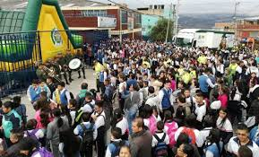
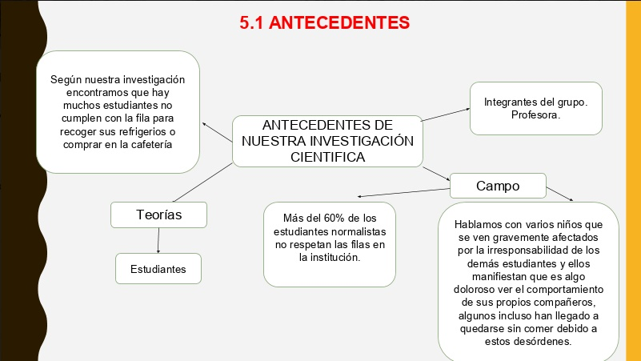
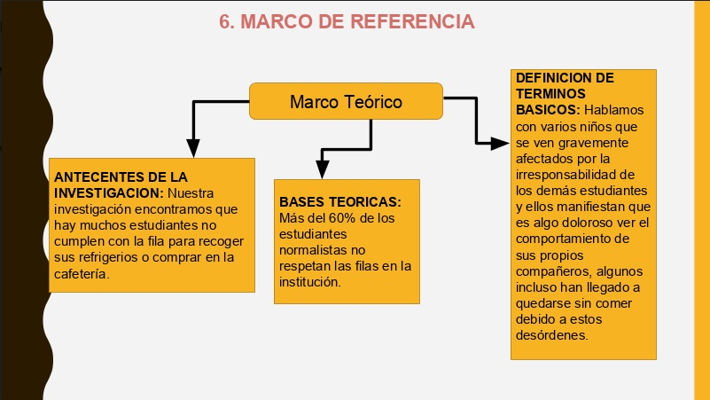
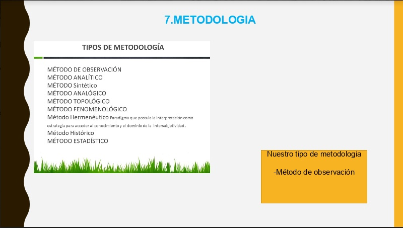
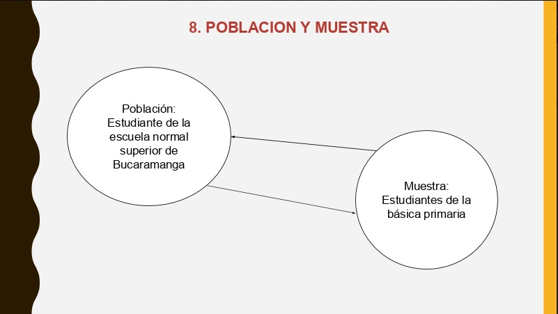
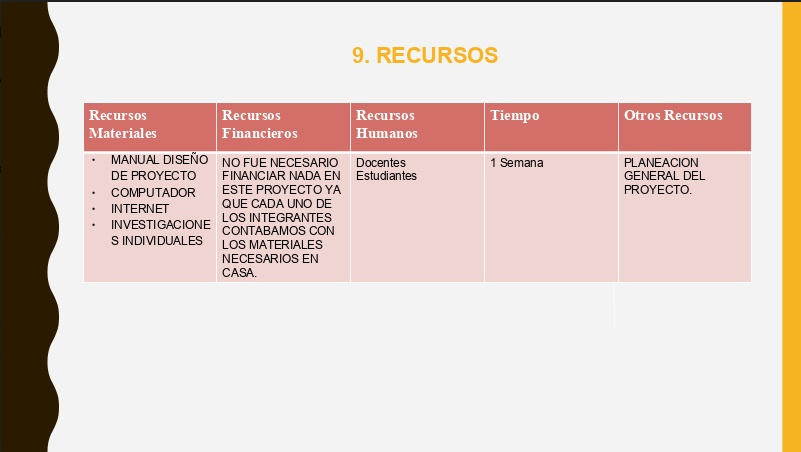
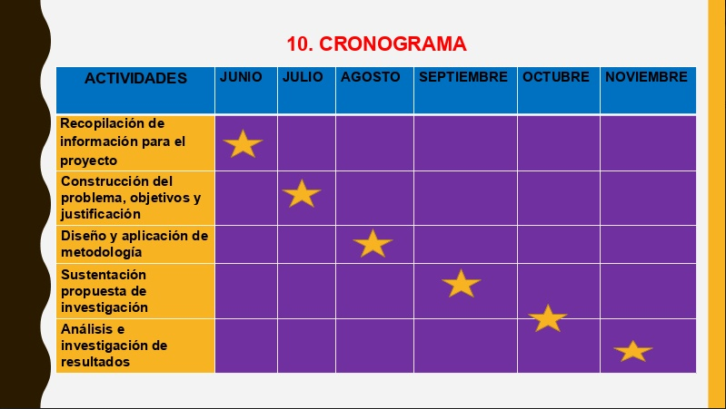

AGLOMERACION EN LA FILA DE LA COOPERATIVA EN LOS ESTUDIANTES
DE EDUCACION BASICA PRIMARIA
El siguiente proyecto fue realizado por los estudiantes:
MARIA NATALIA RIAÑOROA
NIKOLE YINARY HERNANDEZ CARRILLO
MARIA CAMILA TELLEZ CUEVAS
YOHANA TORRES ALFONSO
MARIANA VILLAMIZAR QUINTERO
11-1
Escuela normal superior Bucaramanga
2020
DIAGNOSTICO:
En la escuela normal superior de Bucaramanga se han presentado
muchos problemas al hacer las filas para poder comprar ya que los
estudiantes no hacen una debida fila ya que se acumulan todo en un
mismo lugar para pedir lo que van a oncear, es necesario hacer
conscientes a los niños desde primaria para que cuando lleguen a
bachillerato se acostumbren a hacer una fila y esperar debidamente su
turno para pedirle a la señora de la cafetería que los atienda.
INTRODUCCION:
En este proyecto vamos a hablar de la aglomeración en fila de la
cooperativa en la ensb, puesto que es muy importante que los niños
desde pequeños empiecen a ser organizados en la fila sobretodo
puesto que ellos se van formando para la vida, es importante que cada
uno empiece a ser consciente que debe hacer la fila para que no se
vean aglomeraciones, desorden, problemas entre los niños o niños que
van a comprar, o que se les acolan, entonces debemos enseñarles
nosotros a los niños que deben hacer una fila para poder comprar,
tambien deberán aprender a esperar puesto que en el colegio son
muchos estudiantes y no todos a la vez los pueden atender.
JUSTIFICACION:
Es un problema de suma importancia, ya que a esta edad la
alimentación es muy importante para el crecimiento y desarrollo
del Niño, por parte de los productos estos se pueden dañar y no
podrían ser consumidos lo que llevaría al desperdicio de alimentos
PLANTEAMIENTO DEL PROBLEMA:
El problema en general es la aglomeración en la fila de la
cooperativa a la hora de entregar los refrigerios con lo cual los
niños de básica primaria una parte se pueden quedar sin su
lochera o no se la entregan a tiempo y les ocasiona problemas
porque llegan tarde al salón o no obtienen el refrigerio.

OBJETIVOS:
Buscar la mejor solución para este problema, no podemos permitir que
se sigan presentando ese tipo de desorden en las filas pues es algo que
todos necesitamos.
Debemos inculcarle a toda la comunidad normalista la importancia de
tener empatía por el otro y de hacer respetar las normas
ANTECEDENTES DE INVESTIGACION CIENTIFICA:

MARCO DE REFERENCIA:

METODOLOGIA:




RESULTADOS DEL PROYECTO:
Teniendo claros los el problema y la solución, esperamos una pronta puesta en
acción, ya que esto es el reflejo del orden de la escuela y el ejemplo de los
estudiantes de mayor grado, con ayuda de esta investigación vamos a darle fin
a este problema y poder ser mejores personas y ser mejor escuela.